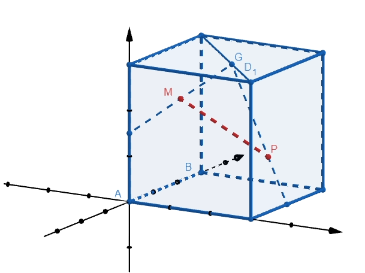

Основные методы решения стереометрических задач
Координатный метод заключается в том, что при решении стереометрической задачи вводится система координат, в которую помещается тело и затем определяются координаты точек, с помощью которых далее можно будет составить уравнения прямых или плоскостей и найти требуемую в условиях задачи величину. Данный метод требует знания большого количества формул, но содержит в себе минимум построений и максимум вычислений.
В большинстве стереометрических задач наиболее удобной для использования является декартова (прямоугольная) система координат.
При использовании данного метода важным является как можно более рационально расположить тело относительно системы координат, так как от этого будет зависеть уровень сложности дальнейшего решения. Например, куб чаще всего в декартовой системе координат удобнее располагать так, чтобы три его ребра находились на координатных осях.
В кубе ABCDA_1 B_1 C_1 D_1 c длиной ребра 3 точки E и F – середины ребер AA_1 и CD соответственно. Точка G расположена на диагонали B_1 D_1 так, что B_1 G=2GD_1. Точка M – середина отрезка ЕG, точка P расположена на отрезке GF так, что GP=2PF. Найдите расстояние между точками M и P.
Введем декартову систему координат. За начало координат примем вершину A, оси направим вдоль выходящих из этой точки ребер, т.е. ребра AD, AB и AA_1 расположим на осях Ox, Oy и Oz соответственно.
В правильной треугольной пирамиде SABC боковые ребра равны 6, а сторона основания равна 4. Найдите высоту пирамиды SD.
В кубе ABCDA_1 B_1 C_1 D_1 c длиной ребра 9 точка E – середина ребра AB. Точка F лежит на ребре AD так, что AF=3DF. Точка M расположена на диагонали A_1 C_1 так, что A_1 M=2MC_1. Точка G – середина отрезка ЕF. Найдите расстояние между точками M и G.